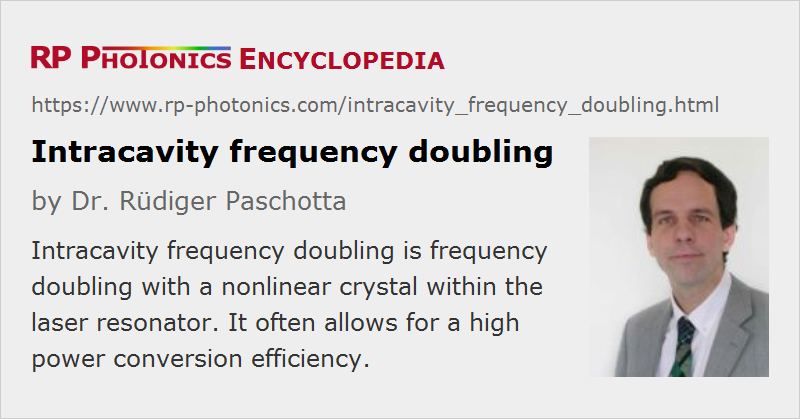

Intracavity Frequency Doubling
Definition: frequency doubling with a nonlinear crystal within the laser resonator
More general terms: nonlinear frequency conversion
German: Intracavity-Frequenzverdopplung
Categories: optical resonators, nonlinear optics, lasers
How to cite the article; suggest additional literature
Author: Dr. Rüdiger Paschotta
Frequency doubling, similar to other processes of nonlinear frequency conversion, can have a high power conversion efficiency only if sufficiently high optical intensities are reached in the nonlinear crystal material. This is often not possible for low- or moderate-power continuous-wave lasers. A good solution in such cases – particularly for solid-state lasers – can be intracavity frequency doubling (or intracavity SHG = second-harmonic generation), where the doubler crystal is placed within the laser resonator (or similarly within the resonator of an optical parametric oscillator). There are actually two different reasons why this works well:
- Within the laser resonator, the optical powers and thus the intensities achievable are much higher, increasing the conversion efficiency per path by often more than an order of magnitude.
- It is normally sufficient to achieve a single-pass conversion efficiency of just a few percent, because the unconverted power remains in the laser resonator rather than being lost.

It is therefore possible to generate a frequency-converted output power which is not much lower than that achievable with the same laser head at the unconverted wavelength (without a frequency doubler, and with a suitable output coupler for the fundamental wavelength).
The resonator must contain a dichroic mirror which has a high transmission for the frequency-doubled beam, and all resonator mirrors should be highly reflective for the fundamental wavelength. (In general, an ordinary output coupler mirror will not be used.) For linear resonators, frequency doubling occurs in both propagation directions. However, the two resulting beams can be combined to a single output beam when there is a folding mirror with significant transmission for the frequency-doubled wavelength. For ideal relative phase changes on the end mirror and without parasitic losses, the double-pass conversion efficiency can be four times the single-pass value.
Concerning polarization and phase matching, there are different options:
- A type I phase-matched frequency doubler may be used within a laser with polarized emission.
- A type II phase-matched frequency doubler is suitable for a laser with unpolarized emission.
In both cases, the frequency-doubled light is linearly polarized.
Many continuous-wave green and blue laser sources are actually based on intracavity frequency doubling. There are versions generating tens of watts of output power. The technique is also applicable to red laser sources, based e.g. on 1342-nm vanadate lasers.
Typical Technical Issues
There are some possible negative side effects of intracavity doubling in continuous-wave lasers. A very disturbing issue can be that under certain circumstances the laser can exhibit very strong intensity noise (“green problem”). This is a result of the introduced nonlinear dynamics of the resonator modes, which can be influenced not only by the nonlinear frequency conversion but also be spatial hole burning and oscillation of higher-order resonator modes. Aspects of polarization can also be important, particularly for frequency doubling with a type II phase-matched crystal. Depending on the situation, the instabilities can be eliminated by applying different techniques in the laser design. Examples are the use of a relatively long resonator (increasing the number of oscillating resonator modes) or to design for stable single-frequency operation. (Somewhat surprisingly, single-frequency operation can even be stabilized by an intracavity doubler.) Thermal effects in the nonlinear crystal (e.g. thermal lensing) are usually less of a problem, since they tend to be weaker than in the laser crystal.
If the gain bandwidth is larger than the phase-matching bandwidth of the nonlinear crystal, the laser wavelength may “escape” the wavelength region where the nonlinear conversion occurs, and this can result in an extremely low conversion efficiency. This problem can be eliminated with an intracavity optical filter, which essentially fixes the laser wavelength.
In the case that the frequency doubler does not work, e.g. due to a crystal temperature which does not allow for phase matching, the intracavity power of the fundamental wave can become fairly high (particularly in a Q-switched laser). The design should be such that laser-induced damage of optical components is nevertheless avoided.
Other Approaches
Only in rare cases is intracavity frequency doubling used with Q-switched or mode-locked lasers. This is partly because the peak powers of such pulsed lasers are anyway sufficiently high for efficient conversion, and partly because the nonlinear element can have a detrimental impact on the pulse formation. In Q-switched lasers, an intracavity frequency doubler can significantly slow the pulse build-up, and in a passively mode-locked laser it can prevent the generation of ultrashort pulses by counteracting the effect of the saturable absorber.
An alternative technique, applicable to both single-frequency lasers and mode-locked lasers, is the use of a resonant enhancement cavity (→ resonant frequency doubling) external to the laser. Normally, only one of the two techniques is used. However, Ref. [15] demonstrates the unusual combination of both techniques. Here, the frequency-doubling resonator has been placed within the laser resonator of a fiber laser. Normally, neither technique would be ideal for a high-power fiber laser: the resonator losses are too high for efficient intracavity doubling, and frequency-stabilized narrowband operation for external resonant doubling is not very convenient. The combination of both methods, however, works well: the long fiber laser resonator automatically operates on frequencies which are resonant in the short doubling resonator (a ring resonator), and the resonant enhancement takes place only in the nonlinear crystal, but not in the fiber, so that the higher losses in the fiber part are not relevant.
It is also possible to perform other kinds of nonlinear frequency conversion within a laser resonator; examples are stimulated Raman scattering, sum and difference frequency generation, and optical parametric oscillation.
Questions and Comments from Users
Here you can submit questions and comments. As far as they get accepted by the author, they will appear above this paragraph together with the author’s answer. The author will decide on acceptance based on certain criteria. Essentially, the issue must be of sufficiently broad interest.
Please do not enter personal data here; we would otherwise delete it soon. (See also our privacy declaration.) If you wish to receive personal feedback or consultancy from the author, please contact him e.g. via e-mail.
By submitting the information, you give your consent to the potential publication of your inputs on our website according to our rules. (If you later retract your consent, we will delete those inputs.) As your inputs are first reviewed by the author, they may be published with some delay.
Bibliography
| [1] | O. Svelto and R. Polloni, “Optimum coupling for intracavity second harmonic generation”, IEEE J. Quantum Electron. 4 (9), 528 (1968), doi:10.1109/JQE.1968.1075384 |
| [2] | R. G. Smith, “Theory of intracavity optical second-harmonic generation”, IEEE J. Quantum Electron. QE-6, 215 (1970), doi:10.1109/LEOS.2006.279220 |
| [3] | T. Baer, “Large-amplitude fluctuations due to longitudinal mode coupling in diode-pumped intra-cavity doubled Nd:YAG lasers”, J. Opt. Soc. Am. B 3 (9), 1175 (1986), doi:10.1364/JOSAB.3.001175 |
| [4] | M. Oka and S. Kubota, “Stable intracavity doubling of orthogonal linearly polarized modes in diode-pumped Nd:YAG lasers”, Opt. Lett. 13 (10), 805 (1988), doi:10.1364/OL.13.000805 (polarization issue for type II doubling resolved with additional quarter-wave plate) |
| [5] | G. E. James et al., “Intermittency and chaos in intracavity doubled lasers. II”, Phys. Rev. A 41 (5), 2778 (1990), doi:10.1103/PhysRevA.41.2778 |
| [6] | V. Magni et al., “Intracavity frequency doubling of a cw high-power TEM00 Nd:YLF laser”, Opt. Lett. 18 (24), 2111 (1993), doi:10.1364/OL.18.002111 (suppression of noise by operation on hundreds of cavity modes) |
| [7] | M. Tsunekane et al., “Elimination of chaos in a multilongitudinal-mode, diode-pumped, 6-W continuous-wave, intracavity-doubled Nd:YAG laser”, Opt. Lett. 22 (13), 1000 (1997), doi:10.1364/OL.22.001000 |
| [8] | K. I. Martin et al., “Stable, high-power, single-frequency generation at 532 nm from a diode-bar-pumped Nd:YAG ring laser with an intracavity LBO frequency doubler”, Appl. Opt. 36 (18), 4149 (1997), doi:10.1364/AO.36.004149 |
| [9] | C. Czeranowsky, V. Baev, and G. Huber, “Stabilization of intracavity frequency-doubled lasers with type I phase matching”, Opt. Lett. 28 (21), 2100 (2003) (noise suppression by placing crystals at certain positions in the resonator) |
| [10] | C. Du et al., “6-W diode-end-pumped Nd:GdVO4/LBO quasi-continuous-wave red laser at 671 nm”, Opt. Express 13 (6), 2013 (2005), doi:10.1364/OPEX.13.002013 |
| [11] | Q. H. Xue et al., “High-power efficient diode-pumped Nd:YVO4/LiB3O5 457 nm blue laser with 4.6 W of output power”, Opt. Lett. 31 (8), 1070 (2006), doi:10.1364/OL.31.001070 |
| [12] | L. McDonagh and R. Wallenstein, “Low-noise 62 W CW intracavity-doubled TEM00 Nd:YVO4 green laser pumped at 888 nm”, Opt. Lett. 32 (7), 802 (2007), doi:10.1364/OL.32.000802 |
| [13] | C. Stolzenburg et al., “Cavity-dumped intracavity-frequency-doubled Yb:YAG thin-disk laser with 100 W average power”, Opt. Lett. 32 (9), 1123 (2007), doi:10.1364/OL.32.001123 |
| [14] | T. Südmeyer et al., “Efficient 2nd and 4th harmonic generation of a single-frequency, continuous-wave fiber amplifier”, Opt. Express 16 (3), 1546 (2008), doi:10.1364/OE.16.001546 |
| [15] | R. Cieslak and W. A. Clarkson, “Internal resonantly enhanced frequency doubling of continuous-wave fiber lasers”, Opt. Lett. 36 (10), 1896 (2011), doi:10.1364/OL.36.001896 |
See also: frequency doubling, nonlinear frequency conversion, resonant frequency doubling, green lasers, blue lasers, red lasers, nonlinear crystal materials, enhancement cavities
and other articles in the categories optical resonators, nonlinear optics, lasers

This encyclopedia is authored by Dr. Rüdiger Paschotta, the founder and executive of RP Photonics Consulting GmbH. How about a tailored training course from this distinguished expert at your location? Contact RP Photonics to find out how his technical consulting services (e.g. product designs, problem solving, independent evaluations, training) and software could become very valuable for your business!
|  |
If you like this page, please share the link with your friends and colleagues, e.g. via social media:
These sharing buttons are implemented in a privacy-friendly way!